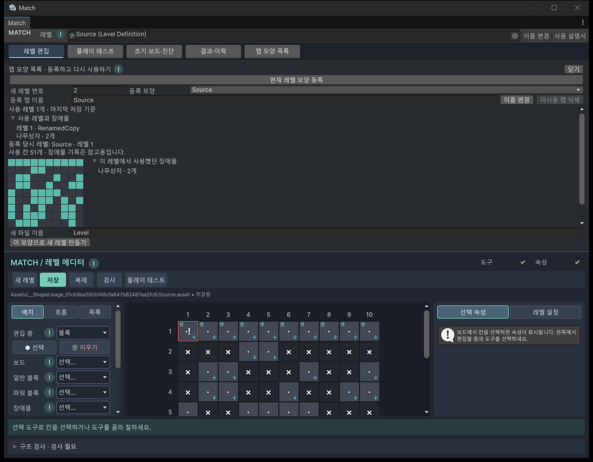
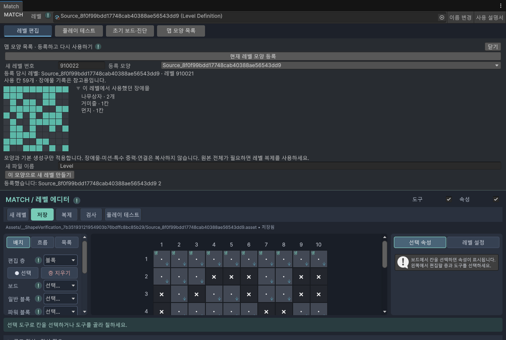

09 · 모양 등록과 재사용
맵 모양 목록
마음에 드는 레벨의 모양을 등록하고 다음 레벨에서 다시 사용합니다.
현재 사용하는 레벨과 장애물 확인
추가 · 맵 모양 목록 → 등록 모양에서 항목을 고르면 사용 레벨 N개 · 마지막 저장 기준이 표시됩니다. 사용 레벨과 장애물을 펼치면 레벨 번호, 파일 이름, 해당 레벨에서 사용한 장애물 종류와 개수를 볼 수 있습니다. 파일 경로는 항목에 마우스를 올려 확인합니다.
현재 레벨을 저장하거나 Ctrl+S를 누르면 열린 목록이 갱신됩니다. 저장하지 않은 변경은 포함하지 않습니다. 같은 파일을 여러 번 저장해도 한 개로 세며, 레벨 번호가 같아도 서로 다른 파일이면 각각 셉니다.
비교 기준은 10×10 활성 칸의 위치입니다. 등록된 모양과 일치하는 레벨만 표시하며 미등록 모양은 자동 등록하지 않습니다. 등록 항목이 없으면 레벨 검색도 하지 않습니다. 현재 사용 현황과 아래의 등록 당시 장애물 기록은 별개이며, 예전 기록은 그대로 유지합니다.

사용하지 않는 등록 맵 삭제
- 등록 모양에서 정리할 항목을 고릅니다.
- 사용 레벨 0개인지 확인하고 미사용 맵 삭제를 누릅니다.
- 확인 문구를 읽고 삭제를 누릅니다. 취소를 누르면 그대로 둡니다.
- 목록에서 사라지고 휴지통으로 옮겼다는 안내가 나오면 완료입니다.
등록 맵 파일만 휴지통으로 옮기며 레벨 파일은 삭제하지 않습니다. 사용하는 레벨이 있으면 삭제 버튼을 누를 수 없습니다. 확인 문구가 열린 사이에 사용 레벨이 추가되어도 삭제 직전에 다시 확인하여 막습니다. 사용 현황을 읽지 못한 경우에도 삭제하지 않으며, 표시된 파일 안내를 확인한 뒤 목록을 다시 여세요.
마음에 드는 모양 등록하기
이전: 고정된 10가지 모양을 사용 횟수에 따라 추천 → 현재: 직접 저장한 레벨을 모양 목록에 등록하고 선택합니다. 임의 추천과 기본 10종 목록은 더 이상 사용하지 않습니다.
- 레벨을 만들거나 기존 파일을 선택합니다.
- 저장을 눌러 현재 레벨을 저장합니다.
- 작업창 위쪽 레벨 → 등록한 맵 모양…을 누릅니다.
- 현재 레벨 모양 등록을 누릅니다.
- 등록 안내가 나오고 목록에서 새 항목이 선택되면 완료입니다.
등록된 항목이 없으면 빈 목록 안내가 나옵니다. 파일이 없거나 저장하지 않은 수정이 있으면 먼저 레벨을 저장하라는 안내가 나옵니다. 등록은 모양을 저장하는 작업이며 현재 레벨은 바꾸지 않습니다.

목록에서 골라 새 레벨 만들기
- 등록 모양 목록에서 원하는 항목을 고릅니다. 목록은 이름순입니다.
- 칸 모양과 등록 당시 레벨, 사용했던 장애물을 확인합니다.
- 새 레벨 번호와 새 파일 이름을 입력합니다.
- 이 모양으로 새 레벨 만들기를 눌러 확정합니다.
- 새 파일에 장애물·미션·초기 블록을 설정한 뒤 검사와 플레이 테스트를 진행합니다.
모양 선택·미리보기·닫기만으로는 데이터가 바뀌지 않습니다. 확정하면 모양과 기본 생성구를 새 레벨에 저장합니다. 기존 레벨은 보존합니다. 같은 모양을 여러 레벨에 반복해서 사용할 수 있습니다.
각 세로 구간의 첫 칸에 아래 방향 공급을 위한 기본 생성구를 만듭니다. 등록 원본의 장애물 배치·미션·특수 중력·연결은 복사하지 않습니다. 원본 전체가 필요하면 레벨 복제를 사용하세요.
같은 모양은 한 번만 등록
10×10 보드의 켜진 칸 위치가 모두 같으면 중복입니다. 장애물·블록 색·파일 이름·레벨 번호가 달라도 같은 모양입니다. 회전하거나 옮겨서 켜진 칸의 좌표가 달라지면 별개 모양입니다.
중복이면 기존 항목을 선택하고 이미 등록되어 있다는 안내를 보여줍니다. 새 파일을 추가하거나 기존 장애물 기록을 덮어쓰지 않습니다. 같은 원본에서 모양을 바꿔 등록하면 이름 뒤 번호를 붙인 새 항목으로 저장합니다.
모양 등록에서는 기본 10×10 구조와 사용할 칸이 있는지 확인합니다. 미션 완성이나 난이도는 검사하지 않으므로 연결이 떨어진 모양도 등록할 수 있습니다.
이 레벨에서 사용했던 장애물
이전: 배치 여건으로 추정한 장애물 후보 → 현재: 등록 당시 해당 레벨에서 실제로 설정한 장애물 종류와 개수를 보여줍니다.
예: 나무상자 2개, 거미줄 1칸, 먼지 1칸. 대형 장애물은 차지하는 칸 수가 아닌 본체 개수로 셉니다. 고철 벽은 구간 수로, 생성구에서 나오는 고철은 고정 목록 수량 또는 유지 목표로 따로 표시합니다. 내구도는 수량에 곱하지 않습니다.
등록 당시 사용한 장애물이 없으면 없다고 표시합니다. 이 기록은 참고용이며 새 레벨에 자동 배치하지 않습니다. 이후 원본을 수정하거나 삭제해도 등록한 모양과 기록은 유지됩니다.
! 아이콘으로 도움말 보기
제목 옆 !에 마우스를 올리면 설명을 읽을 수 있습니다. 클릭하면 해당 사용 설명서 문단으로 이동합니다. 제목과 입력칸의 원래 동작은 유지합니다.
등록 파일과 코드
등록 항목은 Assets/Editor/LevelShapes 폴더의 개별 에셋으로 저장합니다. Unity를 다시 열어도 유지되며 게임 실행용 레벨 파일과 별개입니다.
이전 코드 위치: Assets/Scripts/Editor/Levels → 현재: Assets/Scripts/Features 아래 기능별 폴더입니다.
| 현재 위치 | 역할 |
|---|---|
| ShapeCatalog/Editor/Data/LevelShapePreset.cs | 등록 모양과 장애물 기록 |
| ShapeCatalog/Editor/Application/LevelShapeRecommendations.cs | 등록·중복 검사·적용 |
| LevelEditor/Editor/Presentation/LevelEditorWindow.Recommendations.cs | 통합 창의 모양 목록 화면 |
전체 기능과 역할은 프로젝트의 Assets/Scripts/Features/README.md에 정리되어 있습니다. 핵심 처리의 한국어 주석과 기존 데이터 저장 형식은 유지했습니다.
이전 안내 기록 · 현재 사용하지 않는 추천 방식
09 · 제작 시작점 맵 모양 추천 모양을 고르고 장애물 후보를 살펴본 뒤 새 레벨로 만듭니다. 시작 전에 Match 통합 작업창을 엽니다. 선택된 레벨이 없어도 추천을 사용할 수 있습니다. 새 레벨 만들기 모양 종류 재사용과 추천 순서 장애물 후보 ! 도움말 코드 읽기 모양을 고르고 새 레벨 만들기 추가 · 같은 모양을 여러 레벨에서 다시 사용할 수 있습니다. 기존 레벨은 바꾸지 않습니다. Match 창 위쪽 맵 모양 추천 을 누릅니다. 새 레벨 번호 를 입력합니다. 앞선 레벨에서 덜 사용한 모양이 먼저 나옵니다. 모양 목록에서 선택하고 색으로 표시된 사용 칸을 확인합니다. 함께 쓸 장애물 후보 를 읽고 필요한 것만 골라 사용할 계획을 세웁니다. 새 파일 이름 을 입력하고 이 모양으로 새 레벨 만들기 를 누릅니다. 새 파일이 선택되면 장애물·달토끼·미션을 편집하고 검사와 플레이 테스트 를 진행합니다. 닫기 를 누르면 아무 파일도 만들지 않습니다. 같은 파일 이름이나 레벨 번호가 있으면 다른 이름·번호를 입력하라는 안내가 나옵니다. 추가 · 실제 Unity 추천 화면. 임시 검증용 레벨로 확인했습니다. 추천하는 모양 넓은 사각형, 작은 사각형, 둥근 모서리, 마름모, 십자, 모래시계, 계단, 아래가 넓은 T, 왼쪽이 긴 L, 두 갈래 입구의 10가지입니다. 생성한 뒤 칸을 켜거나 꺼서 더 편집할 수 있습니다. 모양에 맞춰 각 세로 구간의 첫 칸에 기본 생성구를 둡니다. 기본 아래 중력으로 공급할 수 있도록 만든 시작 설정입니다. 직접 경로나 다른 중력 방향을 설정하면 생성구도 다시 확인하세요. 달토끼 시작 배치와 장애물, 미션은 자동으로 넣지 않습니다. 모양 선택은 완성된 플레이 레벨 생성과 다릅니다. 초반에는 다양하게, 이후에는 재사용 앞선 레벨에서 같은 모양을 쓴 횟수가 적은 후보를 먼저 표시합니다. 횟수가 같으면 전체 사용 횟수가 적은 후보가 먼저 나옵니다. 그래도 같으면 기본 목록 순서를 유지합니다. 레벨이 늘어도 사용했던 모양은 후보에서 사라지지 않습니다. 사용 이력은 Assets 안의 레벨 파일에서 활성 칸의 위치가 완전히 같은지 비교합니다. 파일 이름·장애물·미션은 비교하지 않습니다. 이동하거나 회전한 모양은 현재 별개의 모양으로 취급합니다. 추천창을 다시 열면 이력을 다시 읽습니다. 특정 초반 구간을 고정하지 않고 모든 번호에 같은 정렬을 적용합니다. 원하면 사용 횟수와 관계없이 원하는 후보를 직접 고를 수 있습니다. 장애물은 후보 중에서 고르세요 공간이 맞으면 모든 종류를 보여줍니다. 전부 배치하라는 뜻은 아닙니다. 활성 칸이 적은 모양은 거미줄·곰팡이·먼지 같은 덮개와 바닥 후보를 먼저 보여줍니다. 대형 폐가전과 발전기는 2×2 활성 공간이 있을 때 후보에 포함합니다. 후보마다 공간과 공급, 색 매칭, 발전기 연결 등 확인할 점을 적었습니다. 좁은 길 전체를 고정 장애물로 막으면 공급과 목표 해결이 어려워질 수 있습니다. 장애물 사용법 도 함께 확인하세요. 추천이 보장하지 않는 것 장애물 해금 시점, 적정 내구도·수량, 클리어 가능 여부와 난이도는 판정하지 않습니다. 초기 배치와 미션을 정한 다음 직접 플레이로 확인하세요. ! 아이콘으로 설명 보기 추가 · 메뉴 제목 옆의 작은 ! 아이콘에 마우스를 올리면 역할을 읽을 수 있습니다. 누르면 해당 설명서 페이지의 관련 문단으로 이동합니다. 키보드로 아이콘에 이동한 뒤 Enter를 눌러도 됩니다. 제목 자체와 입력칸은 기존 편집 동작을 유지합니다. 저장·검사 같은 실행 버튼에는 동작을 설명하는 툴팁이 있습니다. 설명서가 열리지 않으면 프로젝트의 Docs/MoonRabbitJunkyard/Manual 폴더와 HTML 파일이 있는지 확인하세요. 추가 · 제목과 도움말 버튼을 분리하여 기존 편집 동작을 유지합니다. 추가 · 레벨 설정과 접기 메뉴에도 도움말을 표시합니다. 코드를 읽을 때 설명 주석은 한국어로 작성했습니다. 아래 파일명은 Assets/Scripts/Editor/Levels 폴더 안에서 찾을 수 있습니다. 파일 읽을 내용 LevelShapeRecommendations.cs 모양 목록, 사용 횟수 비교, 장애물 후보, 기본 생성구 설정 LevelEditorWindow.Recommendations.cs 추천 화면과 새 파일 생성 동작 LevelEditorHelp.cs 설명 문구와 ! 아이콘, 문서 위치 연결 LevelBoardEditing.cs 드래그 편집, 중복 칸 처리, Undo 묶음 LevelSupplyEditing.cs 여러 생성구를 바꾸기 전 복제본에서 충돌 검사 LevelConnectionGraph.cs / LevelFlowOverlay.cs 연결점, 경로 초안, 원본 변경 시 입력 취소 LevelInitialStatePanel.cs / .Cascade.cs 탭 이동 시 정지·재개, 공통 게임 실행기와 표시의 역할 구분
등록된 맵 이름 바꾸기
추가 · 맵 모양 목록에서 항목을 고르고 등록 맵 이름에 새 이름을 입력한 뒤 이름 변경을 누릅니다. 변경된 이름으로 목록을 다시 정렬하고 해당 맵을 선택합니다.
모양과 장애물 사용 기록, 등록 당시 원본 이름은 유지됩니다. 원본 레벨 파일 이름은 바뀌지 않습니다. 빈 이름·사용할 수 없는 기호·같은 폴더의 중복 이름은 안내를 표시하고 변경하지 않습니다.
변경 이력
2026.09.29 | 상단 메뉴와 화면 탭 | 흩어진 버튼 → 카테고리 메뉴와 자주 쓰는 탭 | 작업별 구분 개선
| 변경일 | 변경 항목 | 이전 → 현재 | 이유 |
|---|---|---|---|
| 2026.09.29 | 현재 사용 현황 / 미사용 맵 삭제 | 추가 · 저장된 레벨별 사용 현황과 삭제 확인 | 등록 모양 재사용 현황 확인과 미사용 항목 정리 |
| 2026.09.28 | 등록 맵 이름 변경 | 추가 | 편집 기능 사용 안내 |
| 2026.09.28 | 스크립트 위치 | 기존 기술별 폴더 → 기능별·역할별 폴더 | 코드 탐색과 유지보수 구조 정리 |
| 2026.09.28 | 등록형 목록 | 고정 추천 → 사용자 등록·선택 | 직접 만든 모양과 사용 장애물 기록 재사용 |
| 2026.09.28 | 모양 추천·장애물 후보·도움말 | 추가 · 처음 작성 | 레벨 제작과 코드 분석 안내 |
설명 편집일: 2026.09.29 · 대상: Windows / Unity 6000.3.10f1
2026.09.29 추가 검증: 사용 현황·저장 갱신·미사용 삭제 30개 검사 통과. 실제 Unity 화면 확인 완료.
기존 기능 재검증: 등록·중복·이름 변경·파일 재로딩·원본 독립성·UI 적용 49개 검사 통과. Unity 검사 결과는 확인 범위 참조. 브라우저 화면 배치는 미검증입니다.